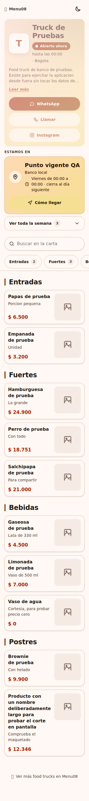
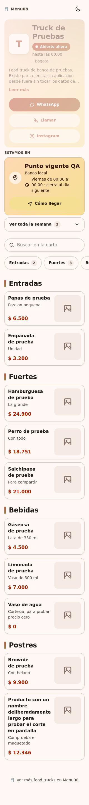

Commit: df7dab87540d2d488e85221ada8cdc7304a9de2d
Fecha UTC: 2026-10-16T11:12:12.030422+00:00
Ejecuciones: EX-008, EX-087, EX-100
Fuente: repositorio Menu08 y respuestas reales de las herramientas. Este informe es una representación de los registros; las capturas de aplicación aparecen al final.
Resultado esperado del caso
El producto no aparece en la carta pública y sigue listado en el panel con disponible=0. El registro de la orden y la fila del producto se conservan.
Comparaciones ejecutadas
| Comprobación | Esperado | Obtenido | Resultado |
|---|
| Cambio | 302 | 302 | Cumple |
| No disponible en BD | 0 | 0 | Cumple |
| Se oculta de carta según criterio AA2 | false | false | Cumple |
| Sigue en panel | true | true | Cumple |
| Agotado se oculta según AA2 | 0 | 0 | Cumple |
| Agotado se oculta según AA2 | 0 | 0 | Cumple |
Notas de ejecución
- Reejecución de DEF-01: el producto agotado debe quedar oculto en la carta y conservarse en el panel.
- Navegador real automatizado en Linux; no equivale a un dispositivo Android físico.
Abrir registro JSON con respuestas HTTP y comprobaciones completas
Capturas originales de aplicación
CP-CARTA-08-chromium-producto-agotado.png

CP-CARTA-08-firefox-producto-agotado.png
